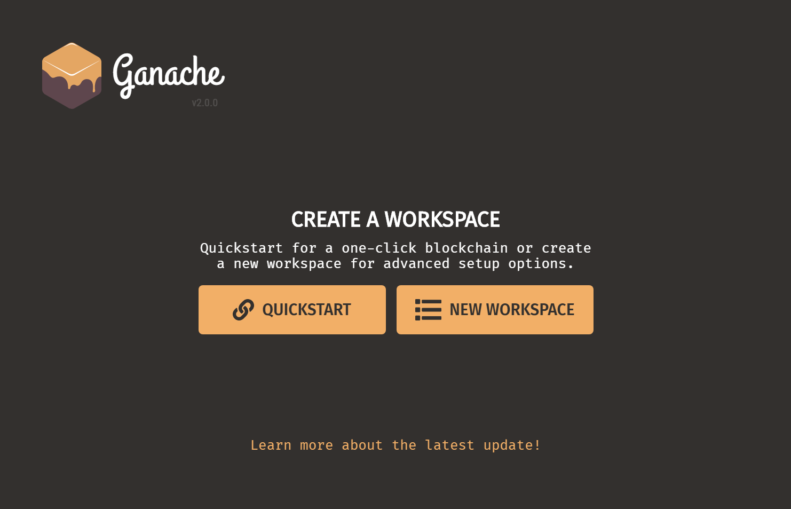
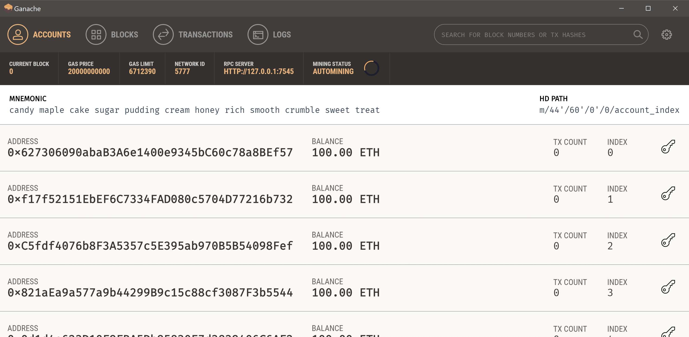
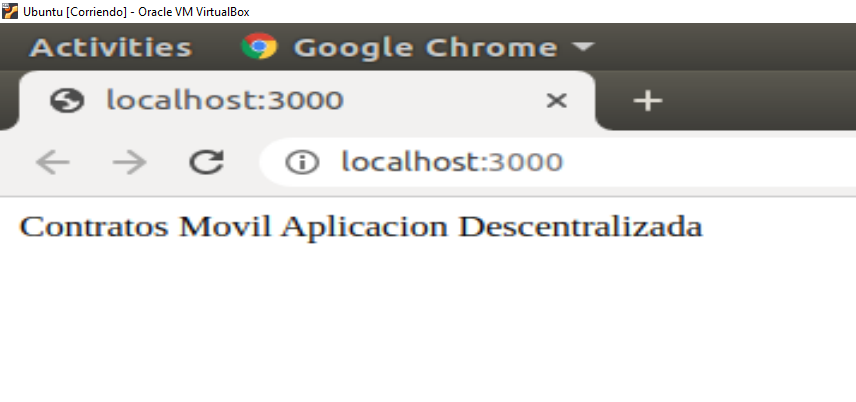

En esta guía se mostrarán los pasos a seguir para crear una DAPP (Aplicación Descentralizada). La aplicación de ejemplo que se va a mostrar permitirá generar y gestionar contratos de servicios móviles desde el navegador. Para ello utilizaremos las herramientas: Truffle Suite con la que podremos crear y hacer uso de contratos inteligentes a través de Ethereum; y MetaMask para realizarlo desde el navegador. El sistema operativo que se va a utilizar en este ejemplo es Ubuntu 18.04.
Esta guía se basa en el tutorial publicado en la web de Truffle Suite. El hecho de haberme encontrado ciertos problemas con la configuración me ha llevado a escribir este post.
Para poder desarrollar y ejecutar nuestra aplicación deberemos tener instalado Node y NPM. Desde ubuntu, abriremos una consola de comandos y podremos instalarlos ejecutando el siguiente comando (1):
$ sudo apt-get install nodejs npmUna vez finalizada la instalación deberemos comprobar las versiones de estas:
$ node –-version
v8.10.0$ npm –-version
3.5.2
Aquí nos tendremos que fijar en si la versión de NPM es superior a la 5.X.X. Si no fuese este el caso, deberemos actualizar las versiones de Node y NPM. Para ello ejecutaremos los siguientes comandos:
$ sudo npm install -g n
/usr/local/bin/n -> /usr/local/lib/node_modules/n/bin/n
/usr/local/lib
n@6.2.0$ sudo n stable
installing : node-v12-14-1
...
Comprobaremos que las versiones han sido actualizadas, para lo que deberemos primero cerrar y volver a abrir la terminal:
$ node –-version
v12.14.1$ npm –-version
6.13.4
Cuando hayamos comprobado que estas han sido actualizadas correctamente, pasaremos a instalar Truffle, la herramienta que nos permitirá generar nuestros contratos (2):
$ sudo npm install -g truffleComprobamos que se ha instalado correctamente:
$ truffle
Truffle v5.1.11 - a development framework for Ethereum
Usage: truffle <command> [options]Tras esto, para poder exportar nuestros contratos inteligentes, necesitaremos tener una blockchain corriendo. Para ello haremos uso de Ganache. Para instalar Ganache deberemos descargarnos el proyecto de su repositorio en Github. Por lo que primero instalaremos git (3):
$ sudo apt-get install gitUna vez se haya instalado, utilizaremos git para descargarnos el proyecto de Ganache en nuestra máquina (4):
$ git clone https://github.com/trufflesuite/ganache.gitNos colocamos en el directorio de ganache descargado y ejecutamos el siguiente comando para instalarlo:
$ npm installLanzamos el proyecto para comprobar que se ha instalado correctamente:
$ npm startY se nos deberá abrir una ventana como esta:
Elegiremos la opción quickstart, y nos deberá aparecer la siguiente ventana con la que sabremos que ya se encuentra nuestra ethereum blockchain corriendo:
Para poder comunicarnos desde el navegador con nuestra aplicación de contratos inteligentes será necesario instalar lite-server. Un servidor de aplicaciones web escrito en Node. Este deberemos instalarlo dentro de nuestro proyecto por lo que primero deberemos generarlo con Truffle. Para ello creamos la carpeta que contendrá el proyecto (5):
$ mkdir ContratosMovilAppNos posicionamos en la carpeta y ejecutamos:
$ truffle init
Preparing to download box
Downloading
cleaning up temporary files
Setting up box
Una vez se hayan generado los módulos del proyecto, instalamos el servidor:
$ npm install lite-serverTras la instalación de nuestro proyecto truffle y el servidor web, generaremos la siguiente carpeta dentro de nuestro proyecto:
$ mkdir srcEn este punto, nuestro proyecto debería tener esta estructura:
drwxr -xr -x 2 javier javier 4096 feb 1 18:21 contracts
drwxr -xr -x 2 javier javier 4096 feb 1 18:21 migrations
drwxr -xr -x 2 javier javier 4096 feb 1 18:21 node_modules
drwxr -xr -x 2 javier javier 4096 feb 1 18:21 src
drwxr -xr -x 2 javier javier 4096 feb 1 18:21 test
drwxr -xr -x 2 javier javier 4096 feb 1 18:21 truffle-config.js
En la carpeta /src añadiremos las fuentes del front de nuestra aplicación web. De momento generaremos un único fichero que muestre un mensaje en el navegador:
$ gedit index.html<!DOCTYPE html>
<html lang="es">
<head>
</head>
<body>
Contratos Movil Aplicacion Descentralizada
</body>
</html>
Tras esto crearemos el siguiente fichero con el código especifidado para establecer los directorios lite-server utilizará como base:
$ gedit bs-config.json{
"server": {
"baseDir": ["./src", "./build/contracts"]
}
}Configuramos el fichero package.json con la información de nuestro proyecto y el comando "dev" para npm:
$ gedit package.json{
"name": "contratos-moviles",
"version": "1.0.0",
"description": "",
"main": "truffle.js",
"directories": {
"test": "test"
},
"scripts": {
"dev": "lite-server",
"test": "echo \"Error: no test specified\" && exit 1"
},
"author": "",
"license": "ISC",
"devDependencies": {
"lite-server": "^2.3.0"
}
}Una vez generados los ficheros arrancaremos el servidor web con el comando parametrizado:
$ npm run devSe nos deberá abrir el navegador y mostrar lo siguiente:
Hasta aquí llegaría la instalación y configuración de nuestra aplicación descentralizada. Por un lado hemos instalado nuestra aplicación de contratos inteligentes (2, 3, 4) y por otro hemos instalado la aplicación web que hará uso de estos contratos (5).